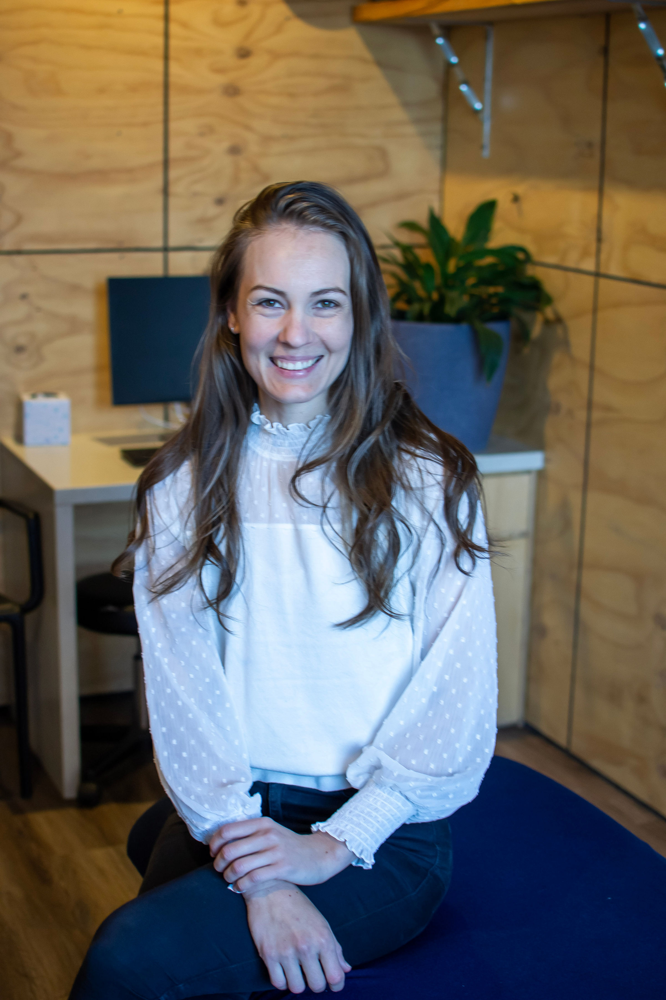
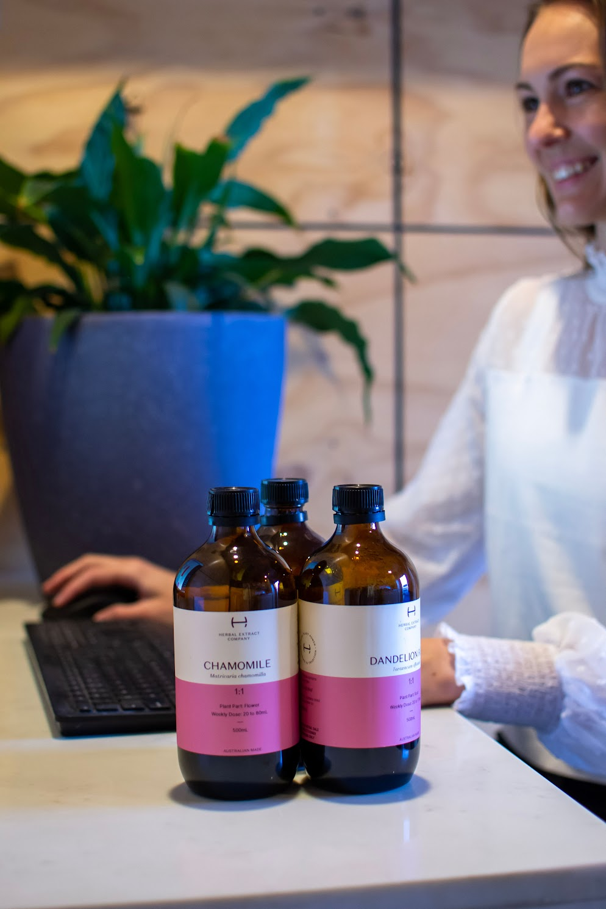

This might be the start of your health journey, or you might be at your wits' end, told again and again that your bloods are "normal" and there's nothing more to do. I know that feeling well. I've been there too.
Please note: Andrea only sees women aged 18 and above.

We peel back the layers of your health and illness journey, addressing them long term, so you get long term change.
It might be the start of something new and amazing for you. It might also be that you're at your wits' end, trying to find answers, but keep being told by well meaning health practitioners that your bloods are "normal," you're completely healthy, and there's nothing else to do but take this pill.
When we work together, we address the reason you're experiencing these issues, through doing the right tests, making consistent dietary and lifestyle change, and using the power of herbal medicine and nutraceutical care to bring you back to balance.
$210
For your first consultation with Andrea. This longer session allows for a thorough assessment of your health goals, physical exams, health history, diet and lifestyle factors. Together we'll devise a short and long term treatment plan, which may include herbal formulas, compounds, supplements, herbal teas, nutritional advice and lifestyle advice.
$120
For reviewing pathology, presenting and adjusting treatment plans, reviewing prescriptions, and discussing progress or new symptom concerns, making sure you're on the right path toward your health goals.
Prices effective from 1 January 2026
Naturopathy is a holistic approach. Every area of your life is considered in an in depth consultation about you. I believe everything is connected: your mental health to your gut health, your past to your present, your diet and lifestyle choices to your health.
If you want a practitioner who takes your full health history into account, considers every system in the body, and takes the time to understand the root causes of your health concerns, not just the symptoms, you've landed on the right page.
Now you just have to ask: am I willing to invest in myself?
"I'm interested in women's health because I'm a woman. I'd be a darn fool not to be on my own side."
Maya Angelou
I partner with pathology and functional test providers to offer a broad range of testing options, allowing for an individualised treatment plan built on real data, not guesswork.
Areas we test for
Post degree study undertaken to keep deepening clinical knowledge in the areas I specialise in.
By visiting this website or purchasing any services or products, you agree to these terms. They outline my responsibilities to you, and yours to me, under Australian Consumer Law. If you don't agree with these terms, please don't continue to use this website or make a purchase.
As a qualified clinical naturopath, I'm committed to the Code of Conduct for unregistered health practitioners.
24 hours' notice is required for any cancellation or rescheduling. Appointments cancelled with less notice will not receive a refund or transfer of deposit. Andrea is often booked weeks in advance, and appointment times may be offered to waitlisted clients when enough notice is given.
If you're experiencing cold or flu like symptoms, or are a close contact of someone with COVID-19, please contact the clinic to switch your appointment online or reschedule.
Online store payments are processed securely via Stripe. Payment for consultations or other services may be required up front. Direct deposit is also accepted: email naturopathy@andreadalton.com.au with your details to arrange this.
90% of the total is due before a test is ordered, with the remaining 10% due on receipt of results. Full payment is required within 90 days of invoice, or the invoice is cancelled and refunded. Results are released only once payment is complete.
Information on this website, articles, tips, or general guidance on natural therapies, is provided for educational purposes only and is not medical advice or a substitute for diagnosis or treatment. Please book an appointment to discuss personal health concerns, or seek the advice of a trusted medical professional. Use of any information on this site is the responsibility of the reader.
All content on this site is mine unless otherwise stated, and may be updated or removed at any time without notice. If you'd like to share it, please link back and credit my name and work. Andrea Dalton's business name, tagline and program names are unregistered trademarks.
Book a consultation and let's start with the right questions.
Book a consultation